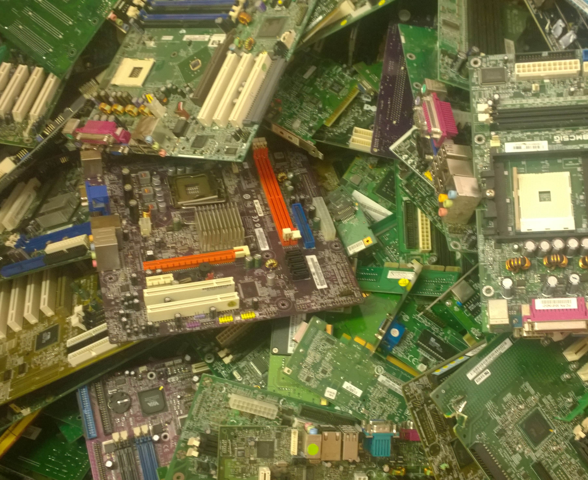
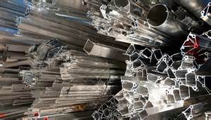
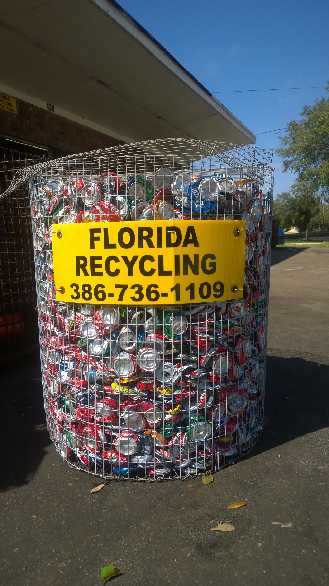

One of the most standard and popular items to scrap are food
grade aluminum cans, which are all from our popular drinks like
Coka Cola. Food grade aluminum is a higher quality so its price
is seperate from the commercial alloy. We take in these cans
and crush them in a powerful machine which produces these ~300 LBS
rectangle bales of colorful gold! We stack them up until we hit a
quota and then ship them out.
E-Scrap

We now accept E-Scrap. Computers have all kinda of precious
metals inside them. Take them apart and seperate to get the most
value out of them. Processors, RAM, Hard Drives, PSU(Power Supply
Units), Mother Boards etc... All have a value. We do take the whole
unity and laptops as well. Unfortuanately motinors or TV screens are
not accepted at this time. A rule of thumb is the older and heavier
a computer is, the more value it will contain. Nowadays manufacturers
use much less materials than ever before to produce electronics.
Scrap Metal

We do take anything metal of course. They range from steel/iron,
aluminum, copper, brass, lead, even the uncommon bronze, insulated
copper wire like household power cords, basically if it is metal then
we most likely take it. Everything has its own price and is bought by
the weight. Some metals aren't worth as much as others but all have a
value that's driven by an everyday market kinda like the stock market.
Can Basket Program

We also have a program where we collaborate with businesses to stick
these baskets out in places of their selection. They fill the baskets
up with the aluminum cans while we pick them up and swap the basket
out when they are full. It's great for schools which helps get the
children involved, my idea :), and works pretty much anywhere that
would rather earn a little extra instead of throwing away. Plus it
helps the environment in any way that we all can.